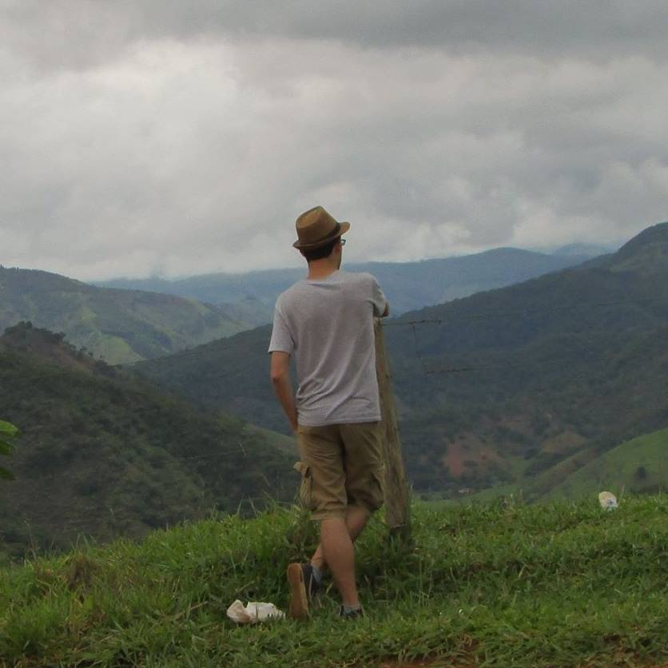

Hello World!!!
Me deram o nome de Elias, prazer. Sou graduando em Ciência da Computação, amante de músicas, séries, podcasts, jogos e da Carolina.
Nessa vida e nesse mundo, eu vivo mais perdido do que cego em tiroteiro mas tentarei trazer coisas úteis nessa página.
"Siga me os bons!"
Publicações
-
Towards Sentiment Analysis for Mobile Devices.
Johnnatan Messias, João P. Diniz, Elias Soares, Miller Ferreira, Matheus Araújo, Lucas Bastos, Manoel Miranda, and Fabrício Benevenuto.
Proceedings of the IEEE/ACM International Conference on Advances in Social Networks Analysis and Mining (ASONAM’16). San Francisco, USA. August 2016.
-
iFeel 2.0: A Multilingual Benchmarking System for Sentence-Level Sentiment Analysis.
Matheus Araújo, João P. Diniz, Lucas Bastos, Elias Soares, Manoel Júnior, Miller Ferreira, Filipe Ribeiro, and Fabrício Benevenuto.
Proceedings of the Int'l AAAI Conference on Weblogs and Social (ICWSM’16). Cologne, Germany. May 2016 (Demo Paper).
Notícias
-
Projeto Science Tree - Página do Departamento de Ciência da Computação UFMG.
O projeto que trabalho atualmente, no segundo semestre de 2016, saiu na página do DCC. Segue o link. [01/09/2016]
-
Disciplina no MGTV 1ª edição.
Em 2014 participei de uma disciplina de robótica a qual no final do semestre tinha uma competição de robôs. O jornal MGTV presenciou o campeonato. Segue o link. [03/06/2014]
